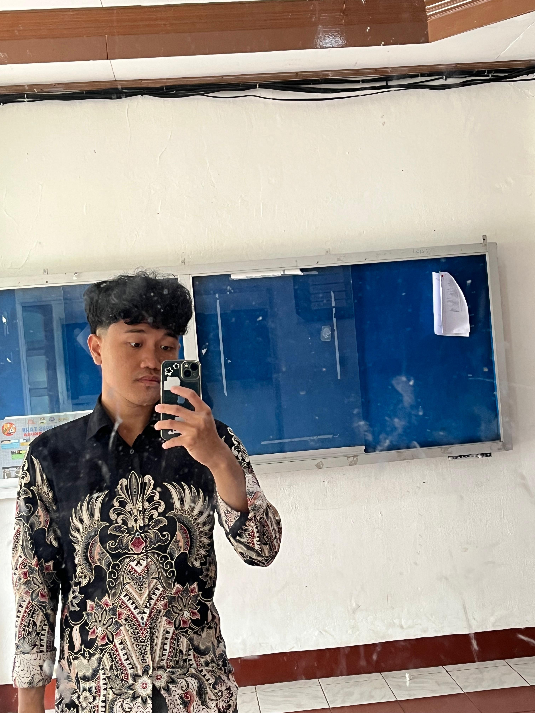

Halo, saya Juan Bagas Geraldo.
Mahasiswa Program Studi Teknik Informatika yang senang membuat sesuatu dari nol, mulai dari tampilan web sederhana sampai ide-ide kecil yang awalnya cuma coretan di buku catatan. Di luar kampus, saya suka bermain gitar, menjelajah tempat baru, dan mencari kedai kopi yang tenang buat mengerjakan tugas.
Website ini adalah rumah kecil saya di internet. Silakan masuk dan lihat-lihat.

Kuliah
Semester 3, Teknik Informatika, Universitas Advent Indonesia.
Sedang dipelajari
HTML, CSS, dan dasar-dasar desain antarmuka.
Cita-cita
Menjadi web developer yang karyanya dipakai banyak orang.